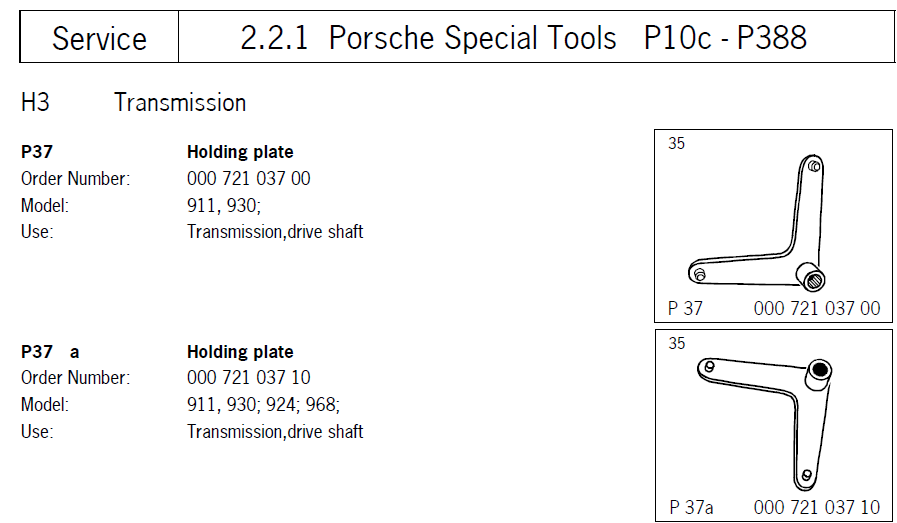
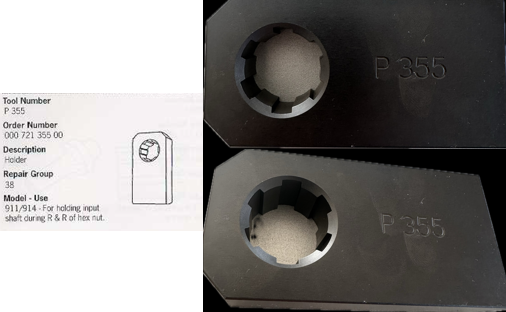
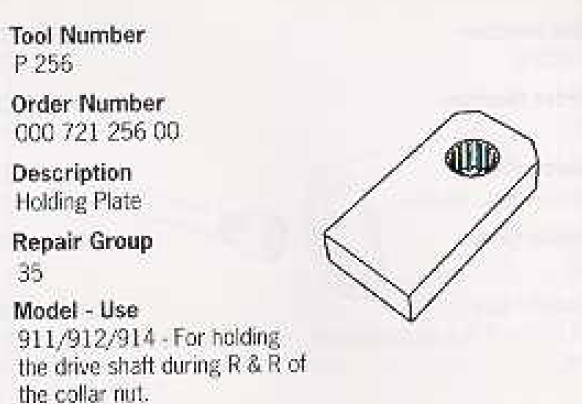
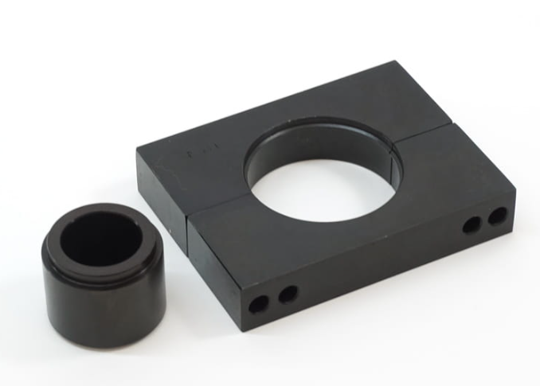
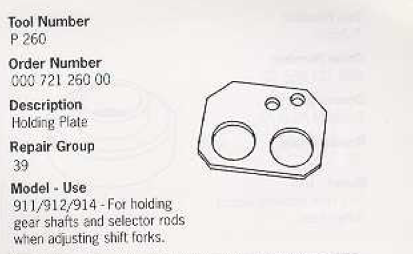

The tools for working on the 915
The Porsche 915 transmission requires special tools to disassemble. This is an overview of all the Special Tools you will need to be able to work on the Porsche 915 transmission.
P37
The first Porsche special tool you will need is the P37 tool. However this tool is optional, I use an impact wrench from Ryobi that works well. Just make sure to spray the bolts to loosen them a bit.

P355
The second special tool you will need (this tool is quite difficult to find) is the P355a tool. This tool is going to hold the input shaft so you can turn the bolt holding all the gears together. There are some workarounds if you dont find these tools. One can use an old fifth gear as this has the same dimensions as the P355a tool. An other option is to fasten the input shaft from the other side by using a clutch disk as this has the same teeth dimensions as the P256 tool.

P256
Alternative for holding the input shaft. or you can get a hold of a clutch disc as is has the same dimensions of gear teeth.

1st and 2nd Gear Synchro Removal Tool
The third and fourth special tools you need is the tools to dissassemble the gears from each other.

3,4, 5th Gear Synchro Removal Tool
The third and fourth special tools you need is the tools to dissassemble the gears from each other.
P260
The fifth special tool you will need is the P260a tool for assembly. I have made a 3d printed tool that i use for this, you can download the CAD file from my CAD file share page
